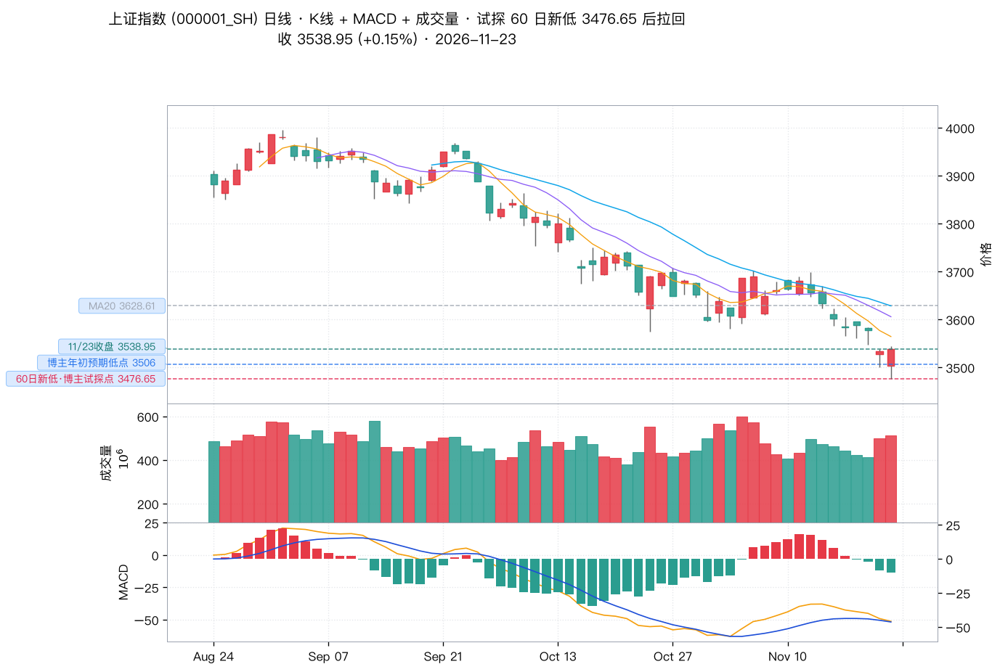
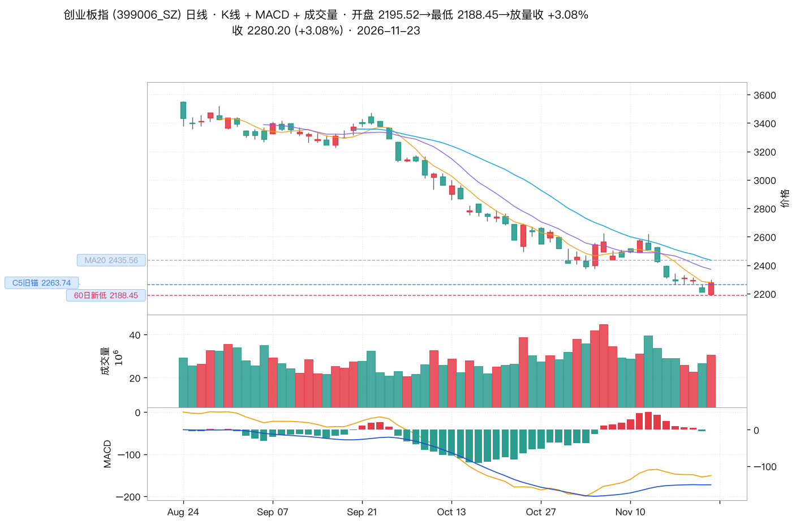
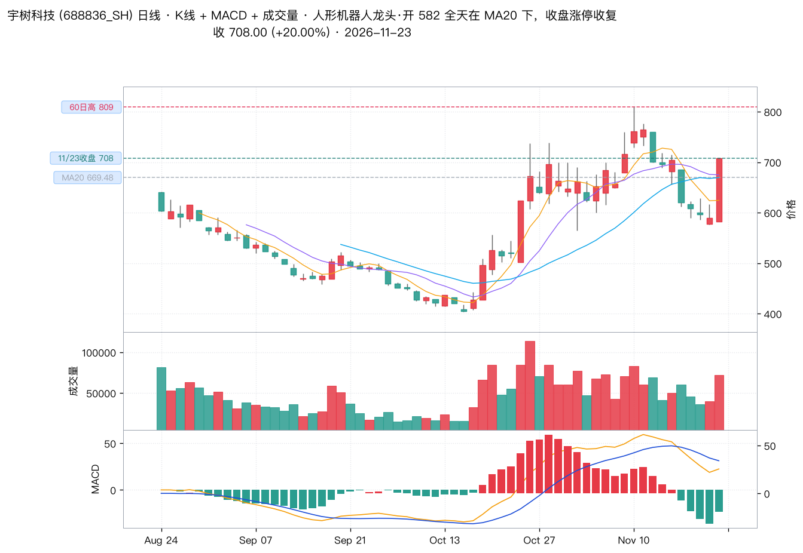
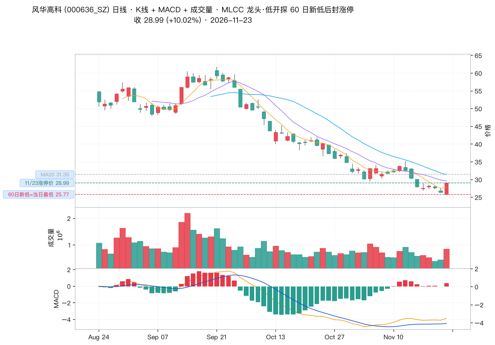
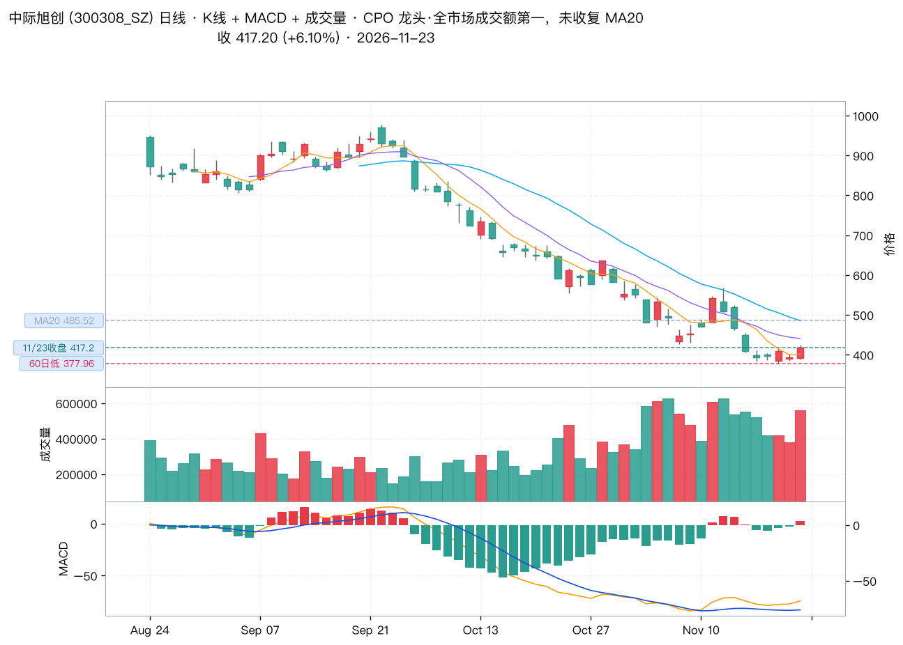

🟢 三个点位分毫不差：14:19「试探了3476.65点」= 当日最低兼 60 日新低；17:04「收在3538点」= 收 3538.95；14:39「MLCC龙头冲板」→ 风华高科封 28.99。⚠️ 但四大指数仍全部压在 MA20 之下，3476.65 比她年初预期的 3506 还低 29.35 点 —— 今日是放量超跌反弹，不是趋势反转。操作：只做回踩不追高，3476.65 失守即减仓。
| 时间 | 信号 | 原文（逐字） | 判读 / 日线实测 |
|---|---|---|---|
| 09:33 | 创业板点位 | 「创业板指数试了2195.52点，很难得在2198下面，预计主力会珍惜！」 | 分毫不差：2195.52 = 当日开盘价。但盘中最低 2188.45 已跌破 2198 → 盘中口径 |
| 09:51 | 方向 | 「人形机器人+物理AI，目前表现出色！」 | 兑现：宇树科技 +20.00% 封板、凡拓数创 +20.00% 二板；申万机械 +4.07%，涨停 28 家居首 |
| 10:17 | 缺口 | 「上周五的3577点和今天的3533缺口都是必补的缺口。」 | 数字对上（11/19 收 3577.62、11/20 收 3533.79），但未兑现：今日最高 3544.60 未回补 3577.62 |
| 11:07 | 端侧 | 「端侧比其它科技类股强很多，因为行业正处于爆发前夜，按3季度业绩看几大龙头业绩增长幅度属于超预期。」 | 方向兑现：瑞芯微 +10.00% 涨停；业绩属基本面，日线无法核验 |
| 13:41 | 涨停潮 | 「目前端侧板块出现涨停潮...........人形机器人龙头目前上涨18%，物理AI板块出现连拉2个20厘米的。」 | 兑现且更大：宇树收 +20.00%；凡拓数创二板 +20.00%；电子行业涨停 16 家 |
| 14:19 | 大盘点位 | 「大盘指数今天试探了3476.65点，比我年初预期的年内低点3506点略低！」 | 分毫不差：当日最低 3476.65 = 60 日新低，比 3506 低 29.35 点 |
| 14:21 | 定性 | 「今天的抵抗力量是明显了，还缺持续的热点板块和量能的持续。」 | 半兑现：量能补上（+9.28%），但 145 只涨停散在 23 个行业，热点不聚焦 |
| 14:39 | MLCC 冲板 | 「目前MLCC龙头出现冲板！」 | 兑现：风华高科 14:39 已冲板，收盘封 28.99；当日低 25.77 = 60 日新低 |
| 17:04 | 收盘 | 「收在3538点！」 | 分毫不差：收 3538.95 |
| 19:59 | 外盘 | 「道指期货现在涨1038点。」 | 无法核验：19:59 盘后期货口径，A 股日线核不了 |
| 14:51 / 18:16 / 19:29 / 20:06 / 21:01 | 情绪·仓位 | 「今天算是小胜吧」「资金管理比炒股技术还重要！」等 5 条 | 无方向信号 / 个人资金无法核验 |

开 3503.52 / 高 3544.60 / 低 3476.65（60 日新低）· 收 3538.95

开 2195.52 / 高 2297.73 / 低 2188.45 · 收 2280.20
低开破新低 → 尾盘收复：上证开 3503.52、最低 3476.65（60 日新低，比她年初预期的 3506 还低 29.35 点），收 3538.95；创业板开 2195.52（= 她 09:33 报的数）、最低 2188.45、收 2280.20（+3.08%），较 11/20 的 2212.13 再破新低后收回。
反弹质量：全市场成交额 15640 亿（沪深 15549 亿），较前日 14311 亿放量 9.28%；涨 4658 / 跌 783，涨停 145 只、跌停 3 只，连板梯队 5 板 2 家、3 板 1 家、2 板 13 家。但四大指数全部还在 MA20 之下（沪 3628.61 / 创 2435.56 / 深 10989.37 / 沪深300 4027.22），量比 110%–113% —— 是放量反抽，不是均线修复。
| 板块 | 当日实测 | 行业交叉口径 | 龙头 | 打法 |
|---|---|---|---|---|
| 人形机器人 / 物理 AI 主线 | 宇树 +20.00% 封板、凡拓数创 +20.00% 二板 | 申万机械 +4.07%（715 只 660 涨），涨停 28 家居首 | 宇树 688836 | 回踩 669（MA20）不破可跟，破 669 放弃，勿追 +20% |
| 端侧 AI + MLCC 被动元件 她点名 | 风华高科封 28.99、瑞芯微 +10.00% 涨停、顺络 +6.28% | 申万电子 +3.68%（623 只 569 涨），涨停 16 家 | 风华高科 000636 | 回踩不破 25.77 可补，破 25.77 放弃 |
| CPO / 光通信 池实测最强 | 自建池 +6.44%，8 只全涨；新易盛 +9.92%、天孚 +13.82% | 申万通信 +3.20%（162 只 142 涨） | 中际旭创 300308 | 回踩 388 不破分批，站上 485 才算修复 |
口径说明：端侧/MLCC 自建池仅 4 只（均值不可靠），以申万电子 569 涨 51 跌为准；CPO 池 8 只全涨、池均 +6.44% 与申万通信 +3.20% 同向，可信。
回避：银行/红利池 -1.23%（工行 -2.66%、建行 -2.90%，申万银行 -0.21% 为最差行业）；煤炭池 -1.87%（4 只全跌）、铁路运营与基建各 -1.53%（全跌）。今日资金从红利搬进科技，银行只剩农业银行 +0.77% 收红，不作为防御垫推荐。
| 标的 | 收盘 / 涨跌 | 成交额 | 关键位 | 实测印证 | 动作 |
|---|---|---|---|---|---|
| 宇树科技 688836 主线龙头 · 机器人 | 708.00 +20.00% 20cm 涨停 | 46.8 亿 量比 143% | MA20 669.48 60 日高 809.00 | 她 13:41「人形机器人龙头目前上涨18%」→ 收盘 +20.00%；开盘 582.00（= 全天最低）在 MA20 669.48 之下，收盘 708.00 才收复 | 回踩 669（MA20）不破可持有，破 669 放弃，勿追 +20% |
| 风华高科 000636 她点名 · MLCC 龙头 | 28.99 +10.02% 封涨停 | 23.2 亿 量比 150% | MA20 31.39 60 日低 25.77 | 她 14:39「MLCC龙头出现冲板」→ 收盘封板；当日低 25.77 创 60 日新低后 V 型反包 | 持有 28.99；回踩 25.77 不破可补，破 25.77 放弃 |
| 中际旭创 300308 底仓垫 · CPO 龙头 | 417.20 +6.10% | 227.7 亿 量比 122% | MA20 485.52 60 日低 377.96 | CPO 池 +6.44%、8 只全涨，方向成立；但收 417.20 仍差 MA20 14% | 回踩 388 不破分批；站上 485 才算趋势修复 |

开 582.00（= 全天最低，全天在 MA20 669.48 下）→ 收 708.00 20cm 涨停收复 · 距 60 日高 809.00 仍差 12.5%

开 25.86 / 低 25.77（= 60 日新低）→ 收 28.99 封涨停 · MA20 31.39 未收复

收 417.20 · 量比 122%、成交额 227.7 亿居全市场前列 · MA20 485.52 未收复
| 她的原话 / 判定 | 实测 | 结论 |
|---|---|---|
| 10:17「上周五的3577点和今天的3533缺口都是必补的缺口。」 | 今日最高 3544.60，收 3538.95；缺口已扩为 3476.65–3577.62 | 未兑现（数字对上，缺口未回补） |
| 09:33「创业板指数试了2195.52点，很难得在2198下面」 | 开盘 2195.52 ✓；盘中最低 2188.45 已跌破 2198；收 2280.20 | 盘中口径 |
| 14:21「还缺持续的热点板块和量能的持续」 | 量能 +9.28% 补上；145 只涨停散在 23 个行业，无单一主线 | 半兑现（量能到位、热点不聚焦） |
| 11:07「按3季度业绩看几大龙头业绩增长幅度属于超预期」 | 基本面判断，日线无法核验 | 无法核验 |
| 19:59「道指期货现在涨1038点。」 | 19:59 盘后期货口径，A 股日线核不了 | 无法核验 |
其余各项（09:51 方向、13:41 涨停潮、14:19 低点、14:39 冲板、17:04 收盘价）均分毫不差或方向兑现，一致项合并不逐条列。
采集：weibo skill 两轮补采（时间线 12 条 + 搜索 101 词表）共 15 条，筛出 11 条可核验；行情为 Tushare Pro 日线（前复权，基准取最新日 adj_factor）。
口径：全部日线级别核验，未使用分钟级数据；她对缠论/结构的定性按博主口径引用，我方未复算。
免责声明：本页为个人复盘记录，不构成投资建议。